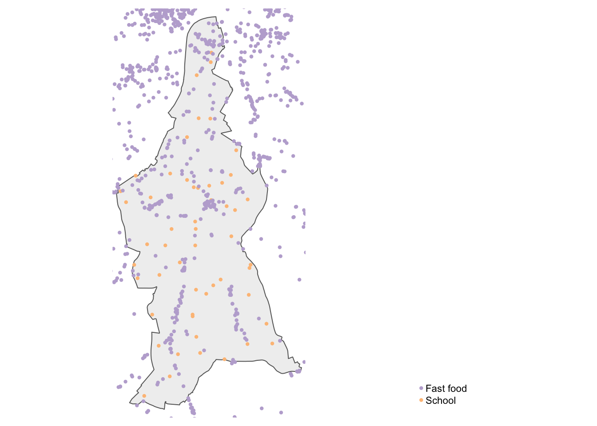

Accessibility Analysis
Accessibility is often described as the ease with which individuals can reach places and opportunities, such as employment, public services, and cultural activities. We can utilise transport network data to quantify accessibility and characterise areas based on their accessibility levels. This week, we will use the dodgr R library to measure accessibility between different points of interest by calculating the network distances between them.
Lecture slides
You can download the slides of this week’s lecture here: [Link].
Reading list
Essential readings
- Geurs, K., Van Wee, B. 2004. Accessibility evaluation of land-use and transport strategies: review and research directions. Journal of Transport Geography 12(2): 127-140. [Link]
- Higgins, C., Palm, M. DeJohn, A. et al. 2022. Calculating place-based transit accessibility: Methods, tools and algorithmic dependence. Journal of Transport and Land Use 15(1): 95-116. [Link]
Suggested readings
- Van Dijk, J., Krygsman, S. and De Jong, T. 2015. Toward spatial justice: The spatial equity effects of a toll road in Cape Town, South Africa. Journal of Transport and Land Use 8(3): 95-114. [Link]
- Van Dijk, J. and De Jong, T. 2017. Post-processing GPS-tracks in reconstructing travelled routes in a GIS-environment: network subset selection and attribute adjustment. Annals of GIS 23(3): 203-217. [Link]
Accessibility in Lambeth
This week, we will analyse the accessibility of fast-food outlets in the London Borough of Lambeth. Specifically, we will examine how closely these outlets are located within walking distance of primary and secondary schools, and explore any potential relationships between their proximity and the relative levels of deprivation in the area.
We will extract the points of interest that we will use for this analysis from the Point of Interest (POI) data for the United Kingdom, obtained from the Overture Maps Foundation and pre-processed by the Consumer Data Research Centre to provide users with easy access.
You can download a subset of the POI dataset via the link provided below. A copy of the 2011 London LSOAs spatial boundaries, the boundaries of the London Boroughs, and the 2019 English Index of Multiple Deprivation. Save these files in your project folder under data.
| File | Type | Link |
|---|---|---|
| Lambeth Overture Points of Interest 2024 | GeoPackage |
Download |
| London LSOA 2011 Spatial Boundaries | GeoPackage |
Download |
| London Borough Spatial Boundaries | GeoPackage |
Download |
| England 2019 Index of Multiple Deprivation | csv |
Download |
To download a csv file that is hosted on GitHub, click on the Download raw file button on the top right of your screen and it should download directly to your computer.
To extract the Lambeth Overture Points of Interest data, a 2-kilometre buffer was applied around the boundaries of Lambeth. This approach ensures that points just outside the study area are included, as locations beyond the borough boundary may still be accessible to residents and could represent the nearest available options.
Open a new script and save this as w08-accessibility.r.
We will start by loading the libraries that we will need:
R code
# load libraries
library(tidyverse)
library(sf)
library(tmap)
library(osmdata)
library(dodgr)You may have to install some of these libraries if you have not used these before.
Next, we can load the spatial data into R.
R code
# read poi data
poi24 <- st_read("data/Lambeth-POI-2024.gpkg")Reading layer `Lambeth-POI-2024' from data source
`/Users/justinvandijk/Library/CloudStorage/Dropbox/UCL/Web/jtvandijk.github.io/GEOG0114/data/Lambeth-POI-2024.gpkg'
using driver `GPKG'
Simple feature collection with 65060 features and 11 fields
Geometry type: MULTIPOINT
Dimension: XY
Bounding box: xmin: 526556.6 ymin: 167827 xmax: 535640.4 ymax: 182673.8
Projected CRS: OSGB36 / British National Grid# read lsoa dataset
lsoa11 <- st_read("data/London-LSOA-2011.gpkg")Reading layer `London-LSOA-2011' from data source
`/Users/justinvandijk/Library/CloudStorage/Dropbox/UCL/Web/jtvandijk.github.io/GEOG0114/data/London-LSOA-2011.gpkg'
using driver `GPKG'
Simple feature collection with 4835 features and 10 fields
Geometry type: MULTIPOLYGON
Dimension: XY
Bounding box: xmin: 503574.2 ymin: 155850.8 xmax: 561956.7 ymax: 200933.6
Projected CRS: OSGB36 / British National Grid# read borough dataset
borough <- st_read("data/London-Boroughs.gpkg")Reading layer `london_boroughs' from data source
`/Users/justinvandijk/Library/CloudStorage/Dropbox/UCL/Web/jtvandijk.github.io/GEOG0114/data/London-Boroughs.gpkg'
using driver `GPKG'
Simple feature collection with 33 features and 7 fields
Geometry type: POLYGON
Dimension: XY
Bounding box: xmin: 503568.2 ymin: 155850.8 xmax: 561957.5 ymax: 200933.9
Projected CRS: OSGB36 / British National GridNow, carefully examine each individual dataframe to understand how the data is structured and what information it contains.
R code
# inspect poi data
head(poi24)Simple feature collection with 6 features and 11 fields
Geometry type: MULTIPOINT
Dimension: XY
Bounding box: xmin: 526913.4 ymin: 169695.2 xmax: 526945.5 ymax: 169970.8
Projected CRS: OSGB36 / British National Grid
id primary_name main_category
1 08f194ada9716b86030eab41bbd4207e "Gorgeous Grub" "burger_restaurant"
2 08f194ada9715a1903d73f4aef170602 "TLC Direct" "wholesale_store"
3 08f194ada944cba203fa613de4f5e6d5 "JD Sports" "sports_wear"
4 08f194ada9449a8a0345a466a0a6ece9 "Lidl GB" "supermarket"
alternate_category address
1 eat_and_drink|fast_food_restaurant "1 Prince Georges Road"
2 professional_services|lighting_store "280 Western Road"
3 sporting_goods|shoe_store "Unit 2 Tandem Centre Top Of Church Rd"
4 retail|fast_food_restaurant "Colliers Wood"
locality postcode region country source source_record_id
1 "London" "SW19 2" "ENG" "GB" "meta" "232538816864698"
2 "London" "SW19 2QA" "ENG" "GB" "meta" "1959707454355017"
3 "Colliers Wood" "SW19 2TY" <NA> "GB" "meta" "644899945690935"
4 "London" "SW19 2TY" <NA> "GB" "meta" "111430837210163"
geom
1 MULTIPOINT ((526913.4 16984...
2 MULTIPOINT ((526921.1 16969...
3 MULTIPOINT ((526915.7 16997...
4 MULTIPOINT ((526922.2 16988...
[ reached 'max' / getOption("max.print") -- omitted 2 rows ]# inspect lsoa dataset
head(lsoa11)Simple feature collection with 6 features and 10 fields
Geometry type: MULTIPOLYGON
Dimension: XY
Bounding box: xmin: 531948.3 ymin: 180733.9 xmax: 545296.2 ymax: 184700.6
Projected CRS: OSGB36 / British National Grid
lsoa11cd lsoa11nm lsoa11nmw bng_e bng_n long
1 E01000001 City of London 001A City of London 001A 532129 181625 -0.09706
2 E01000002 City of London 001B City of London 001B 532480 181699 -0.09197
3 E01000003 City of London 001C City of London 001C 532245 182036 -0.09523
4 E01000005 City of London 001E City of London 001E 533581 181265 -0.07628
lat globalid lsoa11_name pop2011
1 51.51810 {283B0EAD-F8FC-40B6-9A79-1DDD7E5C0758} City of London 001A 1465
2 51.51868 {DDCE266B-7825-428C-9E0A-DF66B0179A55} City of London 001B 1436
3 51.52176 {C45E358E-A794-485A-BF76-D96E5D458EA4} City of London 001C 1346
4 51.51452 {4DDAF5E4-E47F-4312-89A0-923FFEC028A6} City of London 001E 985
geom
1 MULTIPOLYGON (((532105.1 18...
2 MULTIPOLYGON (((532634.5 18...
3 MULTIPOLYGON (((532135.1 18...
4 MULTIPOLYGON (((533808 1807...
[ reached 'max' / getOption("max.print") -- omitted 2 rows ]# inspect borough dataset
head(borough)Simple feature collection with 6 features and 7 fields
Geometry type: POLYGON
Dimension: XY
Bounding box: xmin: 507007.4 ymin: 155850.8 xmax: 561957.5 ymax: 194889.3
Projected CRS: OSGB36 / British National Grid
objectid name gss_code hectares nonld_area ons_inner
1 1 Kingston upon Thames E09000021 3726.117 0.000 F
2 2 Croydon E09000008 8649.441 0.000 F
3 3 Bromley E09000006 15013.487 0.000 F
4 4 Hounslow E09000018 5658.541 60.755 F
5 5 Ealing E09000009 5554.428 0.000 F
6 6 Havering E09000016 11445.735 210.763 F
sub_2011 geom
1 South POLYGON ((516401.6 160201.8...
2 South POLYGON ((535009.2 159504.7...
3 South POLYGON ((540373.6 157530.4...
4 West POLYGON ((509703.4 175356.6...
5 West POLYGON ((515647.2 178787.8...
6 East POLYGON ((553564 179127.1, ...Point of Interest data
The inspection shows that the POI dataset contains a wide variety of location types, with each point tagged under a main and alternative category, as provided by the Overture Maps Foundation via Meta and Microsoft. However, these tags may not be consistent across the dataset, so we will need to identify specific keywords to filter the main_category and alternate_category columns.
We will start by filtering out all POIs where the word school features in the main_category column:
R code
# filter school poi data
poi_schools <- poi24 |>
filter(str_detect(main_category, "school"))
# inspect
head(unique(poi_schools$main_category), n = 50) [1] "\"day_care_preschool\"" "\"driving_school\""
[3] "\"elementary_school\"" "\"school\""
[5] "\"language_school\"" "\"music_school\""
[7] "\"specialty_school\"" "\"preschool\""
[9] "\"dance_school\"" "\"high_school\""
[11] "\"drama_school\"" "\"cooking_school\""
[13] "\"middle_school\"" "\"vocational_and_technical_school\""
[15] "\"art_school\"" "\"private_school\""
[17] "\"religious_school\"" "\"nursing_school\""
[19] "\"montessori_school\"" "\"public_school\""
[21] "\"cosmetology_school\"" "\"medical_school\""
[23] "\"engineering_schools\"" "\"massage_school\""
[25] "\"business_schools\"" "\"law_schools\""
[27] "\"medical_sciences_schools\"" "\"sports_school\""
[29] "\"flight_school\"" You can further inspect the results using the View() function.
This is still a very large list, and looking at the categories not all POIs containing the string school should be included. However, this initial selection has given us a more manageable list from which we can choose the relevant tags. We can now further filter the dataset as well as clip the dataset to the administrative boundaries of Lambeth.
R code
# remove quotes for easier processing
poi_schools <- poi_schools |>
mutate(main_category = str_replace_all(main_category, "\"", ""))
# filter school poi data
poi_schools <- poi_schools |>
filter(main_category == "elementary_school" | main_category == "high_school" |
main_category == "middle_school" | main_category == "private_school" | main_category ==
"public_school" | main_category == "school")
# filter school poi data
lambeth <- borough |>
filter(name == "Lambeth")
poi_schools <- poi_schools |>
st_intersection(lambeth) |>
select(1:11)
# inspect
poi_schoolsSimple feature collection with 141 features and 11 fields
Geometry type: POINT
Dimension: XY
Bounding box: xmin: 528635.7 ymin: 169846.4 xmax: 533065.9 ymax: 180398
Projected CRS: OSGB36 / British National Grid
First 10 features:
id
6 08f194ad1a394235035f3ab7c2e4721d
7 08f194ad1a8da734035945d69c357ddd
8 08f194ad1abb648603defd9d76b4c314
27 08f194ad130f0cd303c1c9f9b42438f8
primary_name main_category
6 "Woodmansterne Children's Centre" elementary_school
7 "Immanuel & St Andrew Church of England Primary School" school
8 "Monkey Puzzle Day Nursery & Preschool Streatham Common" school
27 "Campsbourne School" school
alternate_category address locality
6 school|education "Stockport Rd" <NA>
7 elementary_school|education "Northanger Rd" <NA>
8 education|public_service_and_government "496 Streatham High Road" "London"
27 education <NA> "London"
postcode region country source source_record_id
6 "SW16 5XE" <NA> "GB" "meta" "114577088601307"
7 "SW16 5SL" <NA> "GB" "meta" "128479257200832"
8 "SW16 3QB" "ENG" "GB" "meta" "1092187950854118"
27 <NA> <NA> "GB" "meta" "114411542481619"
geom
6 POINT (529701.5 169846.4)
7 POINT (530016.4 170574.1)
8 POINT (530208.6 170587.9)
27 POINT (528819.8 174228.7)
[ reached 'max' / getOption("max.print") -- omitted 6 rows ]This is still a rather long list and likely inaccurate. According to Lambeth Council Education Statistics, there should be 80 primary and secondary schools across the borough. We can use the alternate_category column to further narrow down our results.
You can inspect the different tags and their frequencies easily by creating a frequency table: table(poi_schools$alternate_category).
R code
# filter school poi data
poi_schools <- poi_schools |>
filter(str_detect(alternate_category, "elementary_school") | str_detect(alternate_category,
"high_school") | str_detect(alternate_category, "middle_school") | str_detect(alternate_category,
"private_school") | str_detect(alternate_category, "public_school"))
# inspect
poi_schoolsSimple feature collection with 58 features and 11 fields
Geometry type: POINT
Dimension: XY
Bounding box: xmin: 528635.7 ymin: 170025.3 xmax: 532897.2 ymax: 179678.2
Projected CRS: OSGB36 / British National Grid
First 10 features:
id
1 08f194ad1a8da734035945d69c357ddd
2 08f194ad1a70460d037da737c256001b
3 08f194ad1c2dc81c032e9e0aa296a8d1
4 08f194ad1e4cec5903fafb7496a2d2f3
primary_name main_category
1 "Immanuel & St Andrew Church of England Primary School" school
2 "Granton Primary School" elementary_school
3 "Kingswood Primary School (Upper Site)" elementary_school
4 "Battersea Grammar School" school
alternate_category address locality postcode region
1 elementary_school|education "Northanger Rd" <NA> "SW16 5SL" <NA>
2 school|public_school "Granton Rd" <NA> "SW16 5AN" <NA>
3 school|high_school "193 Gipsy Road" "London" "SE27 9" "ENG"
4 high_school|education <NA> "London" <NA> <NA>
country source source_record_id geom
1 "GB" "meta" "128479257200832" POINT (530016.4 170574.1)
2 "GB" "meta" "235737420093504" POINT (529299.7 170025.3)
3 "GB" "meta" "110066125723254" POINT (532897.2 171498.4)
4 "GB" "meta" "103107239728950" POINT (529523.9 172310.9)
[ reached 'max' / getOption("max.print") -- omitted 6 rows ]Since the POI dataset is compiled from various open sources, the data quality is not guaranteed. Some schools may be missing, while others could be duplicated, perhaps under slightly different names or because different buildings have been assigned separate point locations. However, it is unlikely that more than one school would share the same postcode. Therefore, we will use postcode information (where available) to finalise our school selection and remove any likely duplicates.
R code
# identify duplicate postcodes
poi_schools <- poi_schools |>
group_by(postcode) |>
mutate(rank = rank(primary_name)) |>
ungroup()
# filter school poi data
poi_schools <- poi_schools |>
filter(is.na(postcode) | rank == 1) |>
select(-rank)
# inspect
poi_schoolsSimple feature collection with 54 features and 11 fields
Geometry type: POINT
Dimension: XY
Bounding box: xmin: 528635.7 ymin: 170025.3 xmax: 532897.2 ymax: 179678.2
Projected CRS: OSGB36 / British National Grid
# A tibble: 54 × 12
id primary_name main_category alternate_category address locality postcode
<chr> <chr> <chr> <chr> <chr> <chr> <chr>
1 08f1… "\"Immanuel… school elementary_school… "\"Nor… <NA> "\"SW16…
2 08f1… "\"Granton … elementary_s… school|public_sch… "\"Gra… <NA> "\"SW16…
3 08f1… "\"Kingswoo… elementary_s… school|high_school "\"193… "\"Lond… "\"SE27…
4 08f1… "\"Batterse… school high_school|educa… <NA> "\"Lond… <NA>
5 08f1… "\"St Bede'… school elementary_school… "\"St … <NA> "\"SW12…
6 08f1… "\"St Leona… school elementary_school… "\"42 … "\"Lond… "\"SW16…
7 08f1… "\"Richard … elementary_s… college_universit… "\"New… <NA> "\"SW2 …
8 08f1… "\"Henry Ca… school high_school|eleme… "\"Hyd… <NA> "\"SW12…
9 08f1… "\"South Ba… school high_school|b2b_s… "\"56 … "\"Lond… "\"SW2 …
10 08f1… "\"Glenbroo… elementary_s… school|public_sch… "\"Cla… <NA> "\"SW4 …
# ℹ 44 more rows
# ℹ 5 more variables: region <chr>, country <chr>, source <chr>,
# source_record_id <chr>, geom <POINT [m]>Although we now have fewer schools than we had expected, either due to overly restrictive filtering of tags or because some school locations are not recorded in the dataset, we will proceed with the current data.
Variable preparation can be a time-consuming process that often necessitates a more extensive exploratory analysis to ensure sufficient data quality. This may involve sourcing additional data to supplement your existing dataset.
We can use a similar approach to approximate the locations of fast food outlets in the Borough.
R code
# filter fast food poi data
poi_fastfood <- poi24 |>
filter(str_detect(main_category, "fast_food_restaurant") | str_detect(alternate_category,
"fast_food_restaurant") | str_detect(alternate_category, "chicken_restaurant") |
str_detect(alternate_category, "burger_restaurant"))
# inspect
poi_fastfoodSimple feature collection with 1444 features and 11 fields
Geometry type: MULTIPOINT
Dimension: XY
Bounding box: xmin: 526666.3 ymin: 168272.9 xmax: 535546.9 ymax: 182554
Projected CRS: OSGB36 / British National Grid
First 10 features:
id primary_name main_category
1 08f194ada9716b86030eab41bbd4207e "Gorgeous Grub" "burger_restaurant"
2 08f194ada9449a8a0345a466a0a6ece9 "Lidl GB" "supermarket"
3 08f194ada944daa80328c6604dab3503 "Moss Bros." "men's_clothing_store"
4 08f194ada932ad8603db11bbb7f953a7 "Livi's Cuisine" "african_restaurant"
alternate_category address locality
1 eat_and_drink|fast_food_restaurant "1 Prince Georges Road" "London"
2 retail|fast_food_restaurant "Colliers Wood" "London"
3 fast_food_restaurant "Unit 5, Tandem Shopping Centre" "London"
4 caterer|fast_food_restaurant "1 Locks Lane" "Mitcham"
postcode region country source source_record_id
1 "SW19 2" "ENG" "GB" "meta" "232538816864698"
2 "SW19 2TY" <NA> "GB" "meta" "111430837210163"
3 "SW19 2TY" <NA> "GB" "meta" "478090646011341"
4 "CR4 2" "ENG" "GB" "meta" "231745500530140"
geom
1 MULTIPOINT ((526913.4 16984...
2 MULTIPOINT ((526922.2 16988...
3 MULTIPOINT ((526945.5 16992...
4 MULTIPOINT ((527970.3 16955...
[ reached 'max' / getOption("max.print") -- omitted 6 rows ]Let’s map both datasets to get an idea of how the data look like:
R code
# combine for mapping
poi_schools <- poi_schools |>
mutate(type = "School")
poi_fastfood <- poi_fastfood |>
mutate(type = "Fast food")
poi_lambeth <- rbind(poi_schools, poi_fastfood)
# shape, polygon
tm_shape(lambeth) +
# specify column, classes
tm_polygons(
col = "#f0f0f0",
) +
# shape, points
tm_shape(poi_lambeth) +
# specify column, colours
tm_dots(
col = "type",
size = 0.05,
palette = c("#beaed4", "#fdc086"),
title = ""
) +
# set layout
tm_layout(
legend.outside = TRUE,
legend.position = c("right", "bottom"),
frame = FALSE
)
Network data
In addition to the locations of interest, we need network data to assess the accessibility of schools in relation to fast food outlets. We will use OpenStreetMap to extract road segment data. Similar to the POI dataset, OSM uses key and value tags to categorise the features within its dataset.
OpenStreetMap (OSM) is a free, editable map of the world, but its coverage is uneven globally. However, the accuracy and quality of the data can at times be questionable, with details such as road types and speed limits missing. The OpenStreetMap Wiki provides more details on the tagging system.
To download the Lambeth road network dataset, we first need to define our bounding box coordinates. We will then use these coordinates in our OSM query to extract specific types of road segments within the defined search area. Our focus will be on selecting all OSM features with the highway tag that are likely to be used by pedestrians (e.g. excluding motorways).
R code
# define our bbox coordinates, use WGS84
bbox_lambeth <- poi24 |>
st_transform(4326) |>
st_bbox()
# osm query
osm_network <- opq(bbox = bbox_lambeth) |>
add_osm_feature(key = "highway", value = c("primary", "secondary", "tertiary",
"residential", "path", "footway", "unclassified", "living_street", "pedestrian")) |>
osmdata_sf()In some cases, the OSM query may return an error, particularly when multiple users from the same location are executing the exact same query. If so, you can download a prepared copy of the data here: [Download].
You can load this copy into R through load('data/London-OSM-Roads.RData')
The returned osm_network object contains a variety of elements with the specified tags. Our next step is to extract the spatial data from this object to create our road network dataset. Specifically, we will extract the edges of the network, which represent the lines of the roads, as well as the nodes, which represent the points where the roads start, end, or intersect.
R code
# extract the nodes, with their osm_id
osm_network_nodes <- osm_network$osm_points[, "osm_id"]
# extract the edges, with their osm_id and relevant columns
osm_network_edges <- osm_network$osm_lines[, c("osm_id", "name", "highway", "maxspeed",
"oneway")]
# inspect
head(osm_network_nodes)Simple feature collection with 6 features and 1 field
Geometry type: POINT
Dimension: XY
Bounding box: xmin: -0.1541499 ymin: 51.52434 xmax: -0.1457924 ymax: 51.52698
Geodetic CRS: WGS 84
osm_id geometry
78112 78112 POINT (-0.1457924 51.52698)
99878 99878 POINT (-0.1529787 51.52434)
99879 99879 POINT (-0.1532934 51.52482)
99880 99880 POINT (-0.1535802 51.52508)
99882 99882 POINT (-0.1541499 51.52567)
99883 99883 POINT (-0.1541362 51.52598)# inspect
head(osm_network_edges)Simple feature collection with 6 features and 5 fields
Geometry type: LINESTRING
Dimension: XY
Bounding box: xmin: -0.1398347 ymin: 51.50608 xmax: -0.0821093 ymax: 51.5246
Geodetic CRS: WGS 84
osm_id name highway maxspeed oneway
31030 31030 Grafton Way primary 20 mph yes
31039 31039 Tottenham Court Road primary 20 mph <NA>
31959 31959 Cleveland Street residential 20 mph yes
554369 554369 King William Street tertiary 20 mph yes
554526 554526 Fenchurch Street tertiary 20 mph <NA>
1530592 1530592 Borough High Street primary 30 mph yes
geometry
31030 LINESTRING (-0.1349153 51.5...
31039 LINESTRING (-0.1303693 51.5...
31959 LINESTRING (-0.139512 51.52...
554369 LINESTRING (-0.08745 51.511...
554526 LINESTRING (-0.085135 51.51...
1530592 LINESTRING (-0.0882957 51.5...We can quickly map the network edges to see how the road network looks like:
R code
# shape, polygon
tm_shape(osm_network_edges) +
# specify column, classes
tm_lines(
col = "#bdbdbd",
lwd = 0.2,
) +
# shape, polygon
tm_shape(lambeth) +
# specify column, classes
tm_borders(
col = "#252525",
lwd = 2
) +
# set legend
tm_add_legend(
type = "line",
labels = "Road segments",
col = "#bdbdbd"
) +
tm_add_legend(
type = "line",
labels = "Outline Lambeth",
col = "#252525"
) +
# set layout
tm_layout(
frame = FALSE,
legend.outside = TRUE,
legend.position = c("right", "bottom"),
)Network preparation
Since our focus is on schoolchildren and walking distances, we will overwrite the oneway variable to assume that none of the road segments are restricted to one-way traffic. This adjustment will ensure our analysis is not skewed by such restrictions and will help maintain a more accurate representation of the general connectivity of the network.
R code
# overwrite one-way default
osm_network_edges$oneway <- "no"Now we have the network edges, we can turn this into a graph-representation that allows for the calculation of network-based accessibility statistics with our prepared point of interest data.
In any network analysis, the primary data structure is a graph composed of nodes and edges. The dodgr library utilises weighting profiles to assign weights based on road types, tailored to the mode of transport that each profile is designed to model. In this instance, we will use the foot weighting profile, as our focus is on modelling walking accessibility. To prevent errors related to the weighting profile, we will replace any NA values in the highway tag with the value unclassified.
R code
# replace missing highway tags with unclassified
osm_network_edges <- osm_network_edges |>
mutate(highway = if_else(is.na(highway), "unclassified", highway))
# create network graph
osm_network_graph <- weight_streetnet(osm_network_edges, wt_profile = "foot")Once we have constructed our graph, we can use it to calculate network distances between our points of interest. One important consideration is that not all individual components in the extracted network may be connected. This can occur, for example, if the bounding box cuts off access to the road of a cul-de-sac. To ensure that our entire extracted network is connected, we will therefore extract the largest connected component of the graph.
The dodgr package documentation explains that components are numbered in order of decreasing size, with $component = 1 always representing the largest component. It is essential to inspect the resulting subgraph to ensure that its coverage is adequate for analysis.
R code
# extract the largest connected graph component
netx_connected <- osm_network_graph[osm_network_graph$component == 1, ]
# inspect number of remaining road segments
nrow(netx_connected)[1] 406770OpenStreetMap is a dynamic dataset, meaning that changes are made on a continuous basis. As a result, it is quite possible that the number of remaining road segments, as shown above, may differ slightly when you run this analysis.
Accessibility analysis
Now that we have our connected subgraph, we can use the dodgr_distances() function to calculate the network distances between every possible origin (i.e. school) and destination (i.e. fast food outlet). For all combinations, the function will map the point of interest locations to the nearest point on the network and return the corresponding shortest-path distances.
The dodgr package requires data to be projected in WGS84, so we need to reproject our point of interest data accordingly.
R code
# reproject
poi_schools <- poi_schools |>
st_transform(4326)
poi_fastfood <- poi_fastfood |>
st_transform(4326)
# distance matrix
distance_matrix <- dodgr_distances(netx_connected, from = st_coordinates(poi_schools),
to = st_coordinates(poi_fastfood), shortest = FALSE, pairwise = FALSE, quiet = FALSE)The result of this computation is a distance matrix that contains the network distances between all origins (i.e. schools) and all destinations (i.e. fast-food outlets):
R code
# inspect
distance_matrix[1:5, 1:5] 6807494201 7110321980 7110321980 11371586827 33148215
8796433764 4620.065 4620.244 4620.244 3134.942 3093.025
8820889464 3621.747 3763.371 3763.371 1969.607 1927.691
11479633279 8456.816 8456.995 8456.995 6946.458 6904.541
292521291 4917.554 4917.732 4917.732 3841.312 3905.577
6625498885 6279.569 6279.747 6279.747 5203.327 5267.591The above output displays the distance (in metres) between the first five schools and the first five fast-food outlets. The row and column IDs refer to the nearest nodes on the OSM network to which the schools and fast-food outlets were mapped.
Now that we have the distance matrix, we can aggregate the data and perform accessibility analysis. For example, we can count the number of fast-food outlets within 500 or 1,000 metres walking distance from each school:
R code
# fast-food outlets within 500m
poi_schools$fastfood_500m <- rowSums(distance_matrix <= 500)
# fast-food outlets within 1000m
poi_schools$fastfood_1000m <- rowSums(distance_matrix <= 1000)You can further inspect the results using the View() function.
In the final step, we can investigate whether there is a relationship between the proximity of fast-food outlets and the relative levels of deprivation in the area. One approach is to calculate the average number of fast-food outlets within 1,000 metres of a school for each LSOA, and then compare these figures to their corresponding IMD deciles.
R code
# read imd dataset
imd19 <- read_csv("data/England-IMD-2019.csv")Rows: 32844 Columns: 3
── Column specification ────────────────────────────────────────────────────────
Delimiter: ","
chr (1): lsoa11cd
dbl (2): imd_rank, imd_dec
ℹ Use `spec()` to retrieve the full column specification for this data.
ℹ Specify the column types or set `show_col_types = FALSE` to quiet this message.# join imd
lsoa11 <- lsoa11 |>
left_join(imd19, by = c("lsoa11cd" = "lsoa11cd"))
# join schools to their parent lsoa
poi_schools <- poi_schools |>
st_transform(27700) |>
st_join(lsoa11)We can use this approach to derive the average number of fast-food by IMD decile:
R code
# average counts by imd decile
fastfood_imd <- poi_schools |>
group_by(imd_dec) |>
mutate(avg_cnt = mean(fastfood_1000m)) |>
distinct(imd_dec, avg_cnt) |>
arrange(imd_dec)
# inspect
fastfood_imd# A tibble: 7 × 2
# Groups: imd_dec [7]
imd_dec avg_cnt
<dbl> <dbl>
1 2 20.1
2 3 14.4
3 4 17.9
4 5 9.83
5 6 3
6 7 8.2
7 8 23.5 There appears to be a weak relationship, with schools in more deprived areas having, on average, a higher number of fast-food outlets within a 1,000-metre walking distance. However, this trend is not consistent, as schools in the least deprived areas of Lambeth show the highest accessibility on average.
Assignment
Accessibility analysis involves evaluating how easily people can reach essential services, destinations, or opportunities, such as schools, healthcare facilities, or workplaces, from a given location. It considers factors like distance, travel time, and transport networks, providing valuable insights for urban planning, transport policies, and social equity. The CDRC Access to Healthy Assets & Hazards (AHAH) dataset, for instance, uses accessibility analysis to quantify how easy it is to reach ‘unhealthy’ places, such as pubs and gambling outlets, for each neighbourhood in Great Britain.
Having run through all the steps during the tutorial, we can recreate this analysis ourselves. Using Lambeth as a case study, try to complete the following tasks:
- Extract all
pubsfrom the Point of Interest dataset. - For each LSOA within Lambeth, calculate the average walking distance to the nearest pub.
- Create a map of the results.
Unlike before, LSOAs are now the unit of analysis. This means you will need to use the LSOA centroids as inputs for your distance matrix.
If you want to take a deep dive into accessibility analysis, there is a great resource that got published recently: Introduction to urban accessibility: a practical guide in R.
Before you leave
This brings us to the end of the tutorial. You should now have a basic understanding of the concepts behind accessibility analysis, how it can be executed in R, and some of the challenges you may encounter when conducting your own research. With this being said, you have now reached the end of this week’s content. Onwards and upwards!